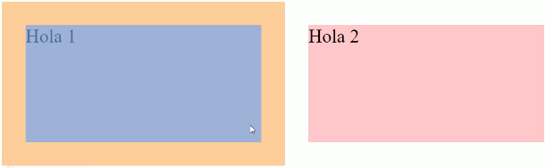
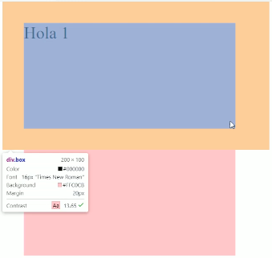
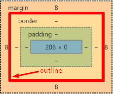
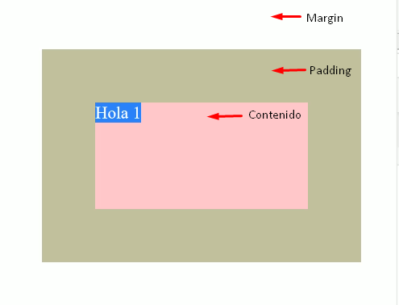

Propiedades del modelo de caja 1
shorthand: termino que se le da a una propiedad que agrupa en ella varias propiedades.
El espacio reservado es el espacio total que ocupa un elemento en la página web.
<>
Margin
Margin hace referencia al margen del elemento o bloque, ningún otro elemento puede acercarse a éste rebasando su margen. Es la separación externa de un elemento.

Con esta propiedad se puede manipular el ancho del margen de cada elemento:
margin-top: #px; el lado superior del margen será del ancho #.
margin-right: #px; el lado derecho del margen será del ancho #.
margin-bottom: #px; el lado inferior del margen será del ancho #.
margin-left: #px; el lado izquierdo del margen será del ancho #.
margin: #px #px #px #px; se le asignarán los valores a los márgenes superior, derecho, inferior, izquierdo respectivamente.
margin: #px #px #px; se le asignarán los valores a los márgenes superior, derecho, inferior respectivamente, y el valor del izquierdo se tomará idéntico al derecho.
margin: #px #px; se le asignarán los valores a los márgenes superior y derecho respectivamente, el valor del izquierdo será igual que el derecho y el valor inferior será igual que el superior.
margin: #px; todo el ancho del margen será de #.
margin: #% se puede usar porcentaje pero el porcentaje se toma del tamaño de BODY (el #% de todo el espacio de BODY).
La propiedad margin con un valor auto tiene la habilidad de absorber todo el espacio disponible en la dirección indicada,
por ejemplo: margin-top: auto; absorbe todo el espacio superior mandando al elemento hasta abajo de la página.
Para centrar un elemento de bloque en la página o dentro de otro elemento, se utiliza la propiedad y el valor margin-left: auto; y margin-right: auto;
Los elementos inline como las imágenes se deben convertir en bloque con display: bloque;.
Cuando se manipulan márgenes en elementos que están horizontales (uno al lado del otro) se suman los márgenes pero los márgenes verticales (uno abajo del otro) se enciman (colapsan).


Lo recomendable es usar sólo margin-bottom cuando se trabaje con márgenes verticales.
Cuando se usa un elemento dentro de otro elemento, sus márgenes verticales (top y bottom) se enciman (colapsan), esto se arregla con la propiedad padding con un valor de 0.1px o 1px.
Outline
Línea externa dibujada entre margin y border restándole dimensión solo a margin (es como un borde del borde), esta línea se sobrepone (se encima) con los elementos adyacentes, generalmente se usa para resaltar elementos como errores o rellenar campos.
Tiene los mismos valores y notación que un borde (ejemplo: outline: #px -tipo de línea- -color-;).

Padding
Es la separación entre el límite de una caja y su contenido

Al igual que margin, se pueden tomar las reglas de valores usando top, right, bottom, left y la abreviación (shorthand) de la propiedad padding usando de 1 a 4 valores.
También se pueden usar valores por porcentajes como en margin, pero el porcentaje en este caso se toma del espacio que abarque el elemento.